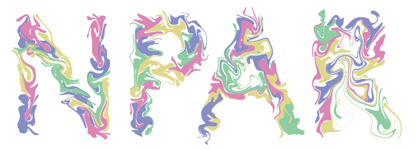
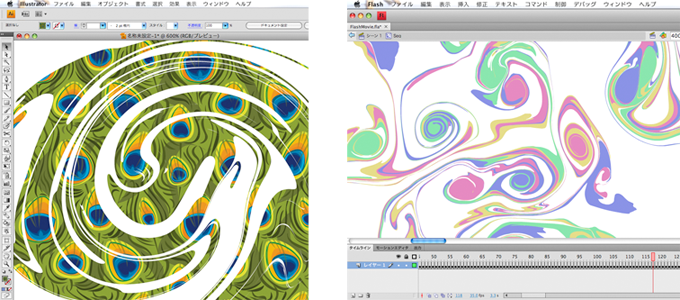

Ryoichi Ando and Reiji Tsuruno
Vector graphics depicted fluid: This figure was generated interactively using our prototype and they can be described in terms of spline curves. Zoom in with your vector graphics viewer to see how our vector fluid preserves very high levels of detail. Click here to download SVG file.
We present a simple technique for creating fluid silhouettes described with vector graphics, which we call "Vector Fluid." In our system, a solid region in the fluid is represented as a closed contour and advected by fluid flow to form a curly and clear shape similar to marbling or sumi-nagashi. The fundamental principle behind our method is that contours of solid regions should not collide. This means that if the initial shape of the region is a concave polygon, that shape should maintain its topology so that it can be rendered as a regular concave polygon, no matter how irregularly the contour is distorted by advection. In contrast to other techniques, our approach explicitly neglects topology changes to track surfaces in a trade off of computational cost and complexity. We also introduce an adaptive contour sampling technique to reduce this extra cost. We explore specific examples in 2D for art oriented usage and show applications and robustness of our method to exhibit organic fluid components. We also demonstrate how to port our entire algorithm onto a GPU to boost interactive performance for complex scenes.
Complex marbling-like silhouette: This vector fluid was created with our GPU prototype and during the simulation, rendering and interaction were responsive. Click here to download SVG file.

Effects of Target-Driven Smoke Animation: When combined with Target-Driven Smoke Animation, our vector fluid can be used to design user specified stencil art with curly fluid textures. Click here to download SVG file.

Shape imported into Adobe illustrator and Adobe FLASH: Our vector fluid can be directly exported into a vector based program without losing detail.
Candy Vector Art Advected Finely on Adobe illustrator: Our vector fluid can be applied not only simple concave polygons but also vector arts designed by artists.
Paper (PDF)
Ryoichi Ando and Reiji Tsuruno. Vector Fluid: A Vector Graphics Depiction of Surface Flow. Proc. Non-Photorealistic Animation and Rendering, 2010 Research papers.
Bibtex (Text)
A bibtex format file for latex processor.
Presentation (Keynote)
A presentation file for Apple Keynote.
Collection Movie (MP4)
Collection movie of animated vector fluids. (31.1 MB)
GPU demonstrated Movie (MP4)
Sample video of vector fluid running on GPU. (11.8 MB)
{kind=link}
{kind=link}
{kind=link}